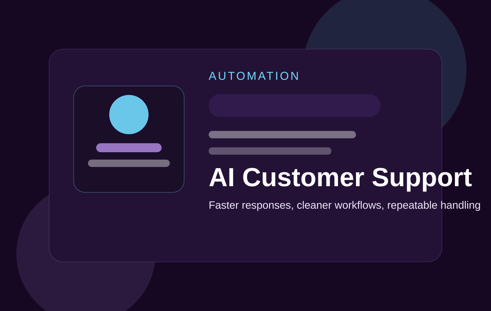

Role
Automation Developer
Automation-focused support project designed to handle common customer questions with better consistency and lower manual effort.

Automation Developer
Support workflow build
Improves response consistency and reduces repetitive support handling.
The project is structured around support workflow design. It combines automation logic, response flow handling, and repeatable communication patterns to reduce manual support work.